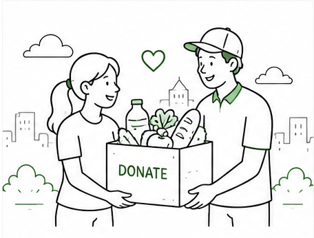

Sign up
Create a local demo account to track your contributions.
Small actions, shared impact
FoodRescue helps people record safe surplus food, arrange a pickup, and keep usable food in the community.
Donate food
A simple process
Create a local demo account to track your contributions.
Share what is available and how much can be donated.
Provide a convenient address, date, and time.
See when a donation is accepted and completed.
Why it matters
Keep safe, usable food out of the waste stream by making it visible to people who can use it.
Clear donation details and status updates make each contribution easier to follow.
Simple coordination helps neighbors, volunteers, and organizations work toward a shared goal.
Create an account and record your first donation in a few minutes.
Get started